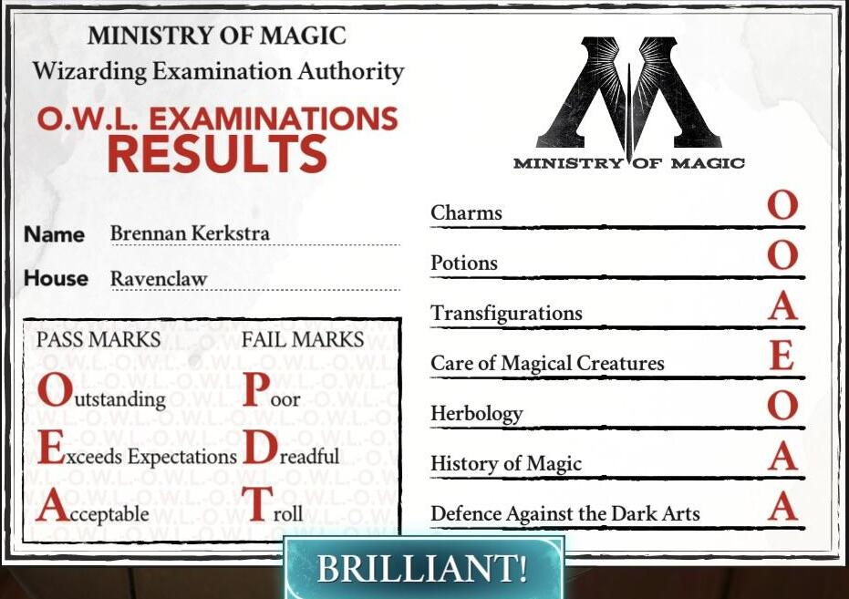
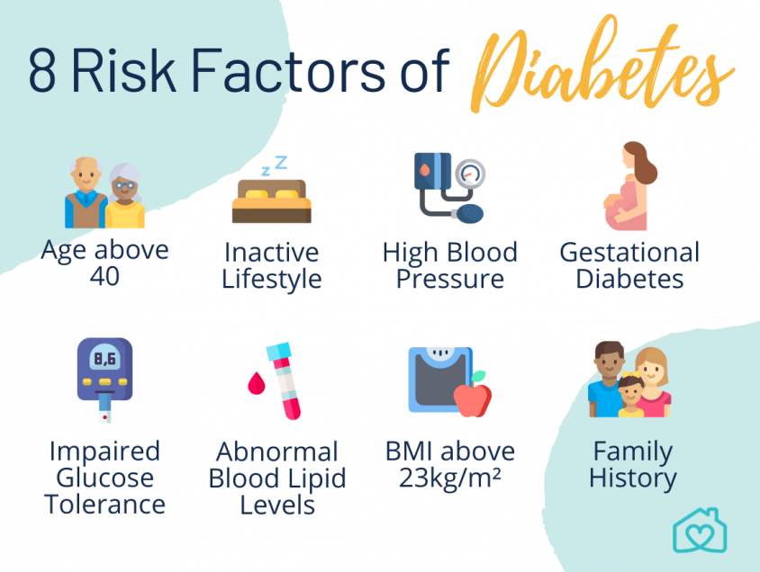
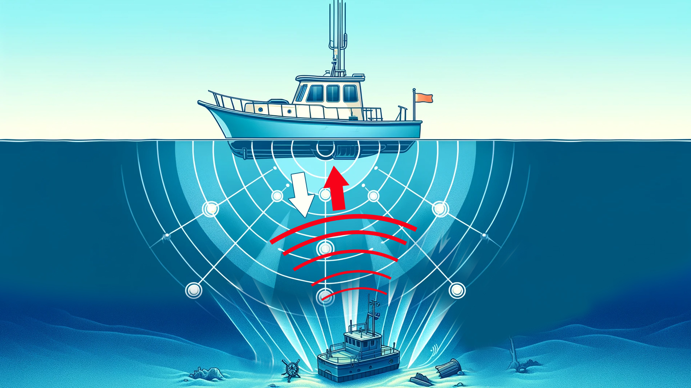

Optimized hotel revenue by analyzing booking patterns, demand forecasting, and dynamic pricing strategies.
Predicting NPS Score using R and Tableau
Performed analytics to predict Net Promoter Score (NPS) and enhance customer satisfaction using various models in R and used Tableau for visualization

Hogwarts Owls Marksheet Generator
Calculates the GPA from a list of subjects with their respective credits and scores, generates a summary marksheet, and plots the GPA against credits for visualization
Cardiac Health Insights
Cleaned and analyzed heart disease data, performed hypothesis tests, ANOVA, logistic regression, and visualized key relationships to identify patterns related to heart disease

Analyzing Diabetes Risks Using R
Conducted statistical analyses on diabetes data to evaluate glucose levels and developed a logistic regression model to assess the onset of diabetes based on various factors
Cancer Incidence Analysis
Performed data cleaning, EDA, correlation, regression modeling, and assumption checks to explore how socioeconomic factors influence cancer rates across U.S. regions
AI/ML Projects
AI Youtube Video Summarizer
Automated YouTube video summarization and generated concise summaries using AI
Revenue Optimization in Ticket Sales
Optimized airline pricing using demand forecasting and data analysis, incorporating machine learning to enhance revenue and competitiveness
Diabetes Prediction using SVM
Utilized an SVM model to predict diabetes based on health metrics, using data preprocessing techniques such as standardization and model evaluation to enhance accuracy

SONAR: Rock vs. Mine Prediction with Logistic Regression
Developed a predictive system to classify objects as 'Rock' or 'Mine' using the SONAR dataset, achieving an average accuracy of 80%
Deep Learning Projects
Unmasked - In-depth analysis of deepfake detection models
A comprehensive evaluation of a deepfake detection model, exploring its robustness, accuracy, and real-world applicability.
Phishing Website Detection
Developed a bidirectional LSTM model to detect phishing websites based on various features, followed by the creation and deployment of a Flask web application
Predictive Keyboard using LSTM
Created a next-word prediction model using a RNN with LSTM layers
Object Detection using YOLO
Developed an object detection system using the YOLO algorithm by setting up ImageAI, TensorFlow, and Keras, and implementing a pre-trained model to detect objects in images